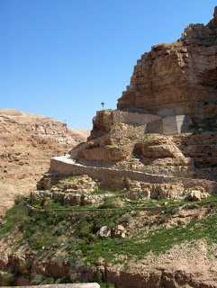
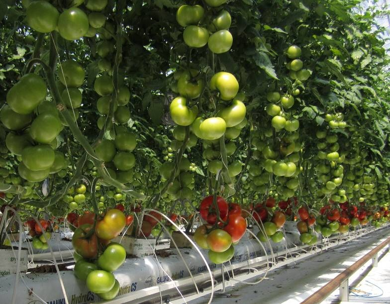

Soarele şi luna - versuri Balade Populare | Versuri.ro

Soarele şi luna - versuri Balade Populare | Versuri.ro
Versuri B BA Balade Populare Soarele şi luna
Versuri Balade Populare - Soarele şi luna
trimise de David .Foaie de cicoare,
În prunduţ de mare
Iată că-mi răsare
Puternicul soare.
Dar el nu-mi răsare,
Ci va să se-nsoare;
Că mi-a tot umblat
Lumea-n lung şi-n lat,
Ţara Românească
Şi Moldovenească
Lungiş,
Curmeziş,
Măre, nouă ai,
Tot pe nouă cai;
Patru-a ciumpăvit,
Cinci a omorât
Şi tot n-a găsit
Potrivă să-i fie
Vro dalbă soţie;
Făr' de mi-a găsit
Şi mi-a nemerit,
La nouă argele,
Nouă feciorele,
În prunduţ de mare,
Pe unde răsare.
Soarele şi luna
A mai mitică,
Ca o floricică,
În mijloc şedea,
La lucru lucra,
Pe toate-ntrecea;
Că ea tot ţesea.
Ţesea, -nchindisea,
Şi ea se numea
Ileana
Simzeana,
Doamna florilor
Ş-a garoafelor,
Sora Soarelui,
Spuma laptelui.
Soare răsărea,
Şi Soare-mi venea
La gură d-argea.
Cu dânsa vorbea,
Frumos c-o-ntreba,
Din gură-i zicea:
- Ileană, Ileană,
Ileană Simzeană,
Doamna florilor
Ş-a garoafelor,
Sora Soarelui,
Spuma laptelui,
Ţeşi şi-nchindiseşti,
Fir verde-mpleteşti
Şi mi te zoreşti
Cămăşi să-mi găteşti,
Şi mi te grăbeşti
Să te logodeşti;
Că io mi-am umblat
Lumea-n lung şi-n lat,
Ţara Românească
Şi Moldovenească
Lungiş,
Curmeziş,
Măre, nouă ai,
Tot pe nouă cai;
Patru-am ciumpăvit,
Cinci am omorât
Şi nu mi-am găsit
Potrivă prin lume
Afară de tine.
Ileana
Simzeana,
Doamna florilor
Ş-a garoafelor,
Sora Soarelui,
Spuma laptelui,
Ea, dac-auzea,
Din gură-i grăia:
- Puternice soare,
Eşti puternic mare,
Dar ia spune-mi: Oare
Und-s-a mai văzut
Şi s-a cunoscut,
Und' s-a auzit
Şi s-a pomenit
Să ia sor' pe frate
Şi frate pe sor'?
De mi-ei arăta,
Atunci te-oi lua,
Atunci, nici atunci!
Unde-o auzea,
Soarele-mi ofta
Şi iar o-ntreba,
Şi iar o ruga,
Şi iar o-mbiia,
Pân' ce Ileana
Din gură-i grăia:
- Io că te-oi lua,
Cum zici dumneata,
Viteaz dacă-i fi
Şi te-i bizui
De mi-ei isprăvi:
Pod pe Marea Neagră,
De fier
Şi oţel,
Iar la cap de pod,
Cam d-o mânăstite,
Chip de pomenire,
Chip de cununie,
Să-mi placă şi mie,
C-o scară de fier
Pân' la naltul cer!
Puternicul Soare,
Ca puternic mare,
Unde-o auzea,
Bine că-i părea.
În palme-mi bătea
Şi pod se făcea;
La cap - mânăstire,
Chip de pomenire;
Şi iar mai bătea,
Scară se-ntindea,
O scară
Uşoară,
De fier
Şi oţel,
Pân' la naltul cer.
Dar el ce-mi făcea?
Pe pod că-mi trecea,
Pe scară suia,
Pe scară
Uşoară,
Pe scară de fier,
În cuie d-oţel,
Pân' la naltul cer.
Şi, de-mi ajungea,
Unde se ducea?
Tot la moş Adam
Şi la maica Iova.
Ei, de mi-l vedeau,
Nainte-i ieşeau;
Din gură-i grăiau;
- O, preasfinte Soare,
Puternice mare,
Ce-mi călătoreşti,
De ne ispiteşti?
La ce te gândeşti
Şi la ce pofteşti?
Şi el răspundea,
Din gură zicea:
- Iaca, moş Adam,
Şi cu maică Iovo,
Mie mi-a venit
Vremea de-nsoţit,
Şi eu c-am umblat
Lumea-n lung şi-n lat,
Ţara Românească
Şi Moldovenească
Lungiş,
Curmeziş,
Şi tot n-am găsit
Potrivă să-mi fie
Vro dalbă soţie;
Făr' de mi-am găsit
La gură d-argea
Numai pe sor-mea,
Sor-mea Ileana,
Ileana Simzeana,
Doamna florilor
Ş-a garoafelor!
Atunci moş Adam
Şi cu moaşa Iova,
Unde-l auzea,
Rău că le părea,
Soarelui zicea:
- Preasfinţite Soare,
Puternice mare,
Unde-ai auzit
Ş-ai mai pomenit,
Unde-ai cunoscut,
Unde-ai mai văzut
Să ia sor' pe frate
Şi frate pe sor',
Că cin' n-o lua
Raiul c-o d-avea,
Iar cine-o lua
În iad c-o intra.
Soar'le se uita,
Din ochi căuta,
Nimic nu grăia;
Iar moşul Adam
Şi cu moaşa Iova
De mână-l luau,
La rai mi-l duceau,
Rai că-i arătau,
Şi de ce vedea,
Bine că-i părea:
Numai mese-ntinse,
Cu făclii aprinse,
Cu pahare pline,
În cântece line;
Jur-prejur de mese
Stau în cete dese
Sfinţi şi mucenici,
Mai mari şi mai mici,
O sută şi cinci;
Iar mai jos de ei,
Sfinţi mai mărunţei,
O sută şi trei.
Şi tot mai erea,
Şi tot mai vedea:
Femei cuvioase,
Măicuţe duioase,
Fecioare curate,
Ucişi în dreptate,
Oşti de biruinţă
Şi soţi cu credinţă.
Dar tot mai erea
Şi tot mai vedea,
Puţin de mergea;
Printre rămurele,
Dalbe păsărele
Cânta-n versurele,
Şi nu prea cânta,
Ci se gongănea,
Din gură-mi zicea:
Ferice, ferice,
Ferice de noi,
De părinţii noştri
Care ne-au făcut,
Care ne-au născut
Şi ne-au botezat
Şi ne-au creştinat,
Că dac-or trăi,
Săraci n-or mai fi!
De tot ce vedea
Bine că-i părea
Şi se mulţumea.
Afar' de-mi ieşea,
Iarăşi moş Adam
Şi cu moaşa Iova
Chieile lua,
La iad îl ducea,
Iadul descuia,
În iad îl băga
Şi de ce-mi vedea
Păr i se zbârlea:
Că-n focuri ardea,
Greu se văieta
Hoţi şi călcători,
Răi cârmuitori,
Şi nurori pizmaşe,
Şi soacre trufaşe,
Fii necuvincioşi,
Preoţi mincinoşi.
Afar' când ieşea,
Soar'le ce-mi vedea?
Un pom ofilit,
Un pom cătrănit;
Printre rămurele,
Nişte păsărele
Cânta-n versurele,
Dar nu prea cânta,
Ci se văieta,
Din gură grăia:
Vai şi vai de noi,
De părinţii noştri
Care ne-au făcut,
Care ne-au născut,
Că ei ne-au lăsat,
Nu ne-au botezat,
Nu ne-au creştinat,
Şi d-or mai trăi,
Tot săraci c-or fi,
Greu s-or pedepsi!
De tot se vedea
Mult rău că-i părea,
Nu se mulţămea.
Foaie, foicea,
Soar' le ce-mi făcea?
De câte vedea
Nu se-ndupleca,
Ci, măre, -mi pleca,
Ci, măre, -mi zbura
La gură d-argea,
Tot la soră-sea,
Şi iar o-ntreba,
Şi iar o ruga,
Şi iar o-mbiia
Pe dânsa s-o ia.
Ileana
Simzeana,
Doamna florilor
Ş-a garoafelor,
Sora Soarelui,
Spuma laptelui,
Daca-l auzea
Şi daca-mi vedea
Că tot nu scăpa,
Ea tot mai cerca,
Din gură-i zicea:
- Frate, frăţioare,
Puternice Soare,
Spune mie: Oare
Cine-a cunoscut,
Cine-a mai văzut,
Cine-a auzit,
Cine-a pomenit
Să ia sor' pe frate
Şi frate pe sor'?
Dar io te-oi lua
Viteaz dacă-i fi
Şi te-i bizui
Până-n zori de zi
Mie să-mi croieşti
Şi să-mi isprăveşti
Peste Marea Neagră
Un pod de aramă,
Să nu-l bagi în seamă,
Iar la cap de pod,
Cam d-o mânăstire,
Chip de pomenire,
Chip de cununie,
Să-mi placă şi mie.
Puternicul Soare,
Ca puternic mare,
Unde-o auzea,
Bine că-i părea
'N palme că-mi bătea,
Podul se-ntindea,
Un pod de aramă,
De nu-l bagi în seamă,
Şi d-o mânăstire,
Chip de pomenire.
Când le isprăvea,
La ea se ducea,
De mân-o lua,
La pod c-o ducea,
La pod c-ajungea,
La pod de aramă,
De nu-l bagi în seamă,
Şi, pod când trecea,
Pod că zornăia,
Pod se cletina,
Că n-a mai văzut,
Nici n-a cunoscut,
Că n-a auzit,
Nici n-a pomenit
Să ia sor' pe frate
Şi frate pe sor'.
Floare, ş-o lalea,
Podul când trecea,
Pe pod când mergea
Către mânăstire
Pentru pomenire
Şi la cununie
Să-i fie soţie,
Ileana
Simzeana,
Doamna florilor
Ş-a garoafelor,
Sora Soarelui,
Spuma laptelui,
Din gură-i zicea
Ş-astfel grăia:
- Frate, frăţioare,
Puternice Soare,
Ia mai spune-mi: Oare
Und' s-a mai văzut
Şi s-a cunoscut,
Und' s-a auzit
Şi s-a pomenit
Mirele d-a dreapta,
Mireasa-nainte?
Ci mi-a fost ş-o fi
Şi s-o pomeni
Mirele-nainte,
Mireasa d-a stânga!
Puternicul Soare,
Puternic şi mare,
De mân-o lăsa,
Nainte-i trecea,
Iar ea, vai de ea,
Aşea de-mi vedea,
Cruce că-şi făcea,
În mare sărea
Şi mi se-neca.
Domnul se-ndura,
Mreană c-o făcea.
Soarele-mi vedea
Şi îmărmurea,
Şi se văieta,
Năvodari chema,
Năvod aducea
Şi-n mare-l băga;
Mulţi galbeni că da
Să-i scoaţă dalba.
Luptă ce-mi lupta
În deşert erea,
Că ei n-o găsea
Şi n-o mai prindea;
Făr' de... ce-mi scotea
Şi-n năvod trăgea?
O mreană de mare
Cu solzii de zare.
Pe mal d-o scotea,
Pe mal d-o zvârlea,
Sfinţi din cer vedea,
Jos se scobora,
'N palme c-o lua
Şi mi-o curăţa,
Şi mi-o tot freca,
Solzii de-i cădea,
Şi-n cer mi-o zvârlea.
Colo, moş Adam
Şi cu maica Iova,
Unde mi-o vedea,
Ei, măre, că-mi sta
De mi-o sclivisea,
Nume că-i dedea,
Lună mi-o chema.
Iar ea, vai de ea,
Măre, -ngenunchea,
Lacrămi că vărsa,
Pe Domnul ruga.
Domn c-o auzea,
Domn c-o asculta,
Din gură-mi grăia
Şi mi-i osândea:
Lumea cât o fi
Şi s-o pomeni,
Nu vă-ţi întâlni
Nici noapte, nici zi;
Soare când o sta
Către răsărit,
Luna s-o vedea
Tot către sfârşit;
Luna d-o luci
Către răsărit,
Soarele mi-o fi
Tot către sfinţit!
Şi d-atunci se trase,
Şi d-atunci rămase,
Lumea cât o fi
Şi s-o pomeni,
Că ei se gonesc
Şi nu se-ntâlnesc:
Lună când luceşte,
Soarele sfinţeşte;
Soare când răsare,
Luna intră-n mare.
Tipărire lyrics Corectează lyrics
Alte versuri Balade Populare : Mioriţa - versuri Balade Populare Toma Alimoş - versuri Balade Populare Balada lui Constantin Brâncoveanu - versuri Balade Populare Pintea Viteazu - versuri Balade Populare Novac şi corbu - versuri Balade Populare
Traducere automată
Autentificare Autentificare
Versiunea mobilă | RSS | Arhivă stiri | Arhivă cereri | Parteneri media | Resurse | Condiții de utilizare | Politica de confidentialitate | Contact
Prima pagină | Ştiri | Evenimente | Cere versuri | Trimite versuri noi # a b c d e f g h i j k l m n o p q r s t u v w x y z
